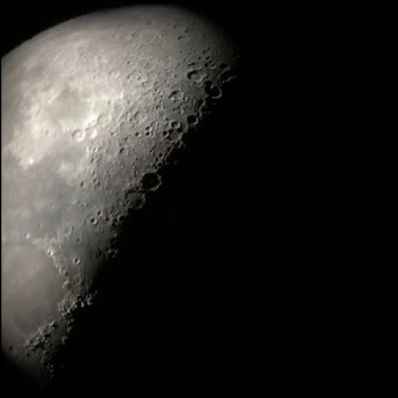
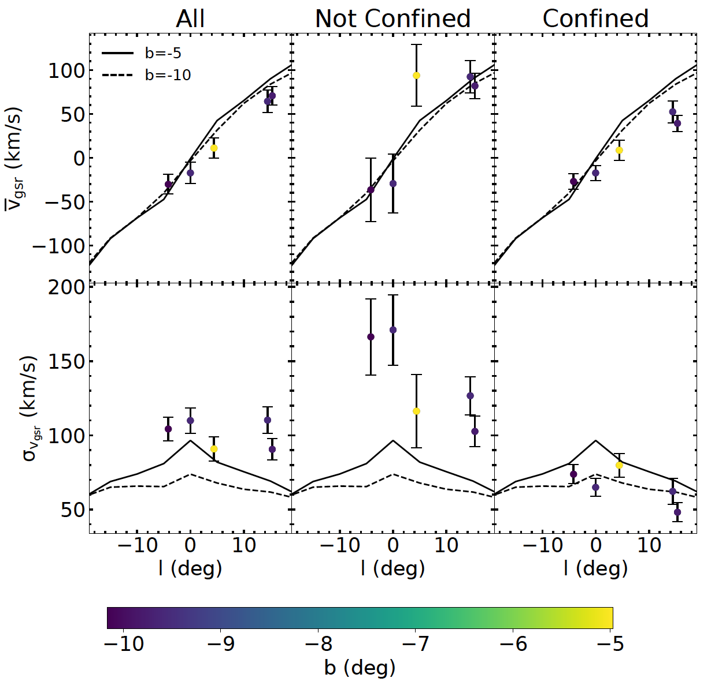
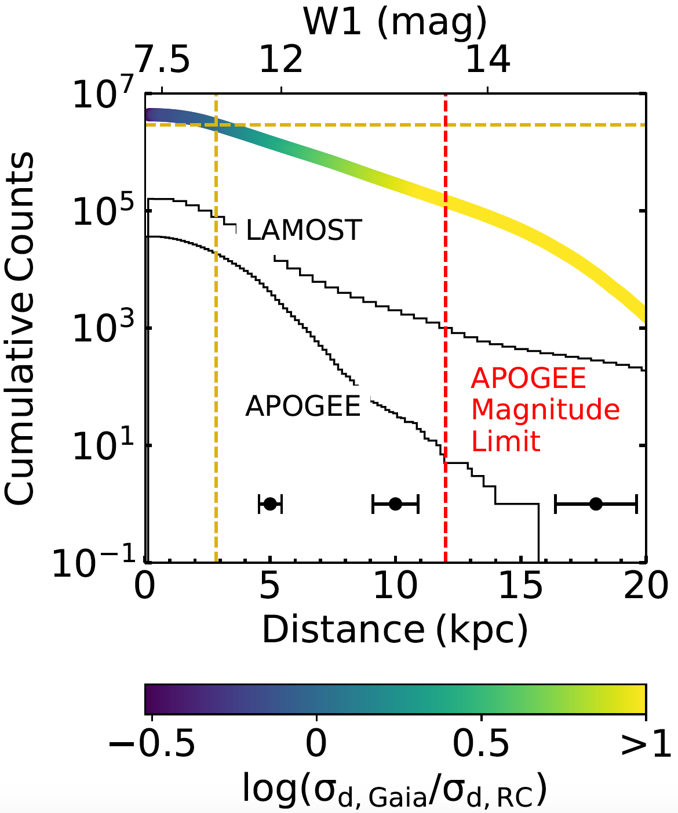
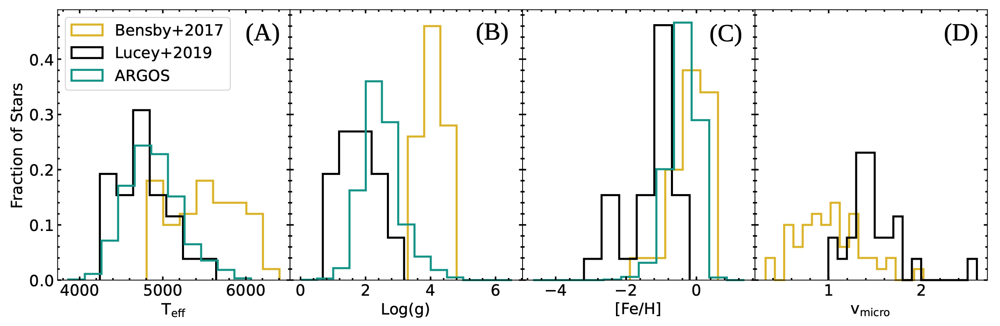
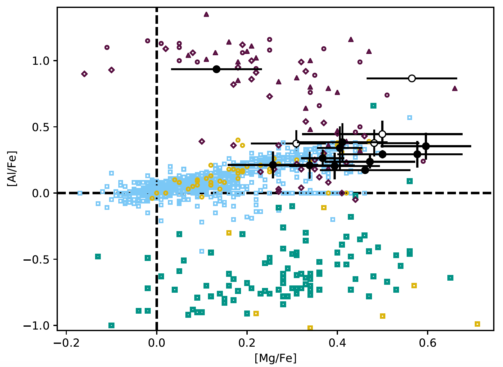

COMBS III
The COMBS survey III: The Chemodynamical Origins of Metal-Poor Bulge Stars
Graduate Student
Department of Astronomy
Univeristy of Texas at Austin
I am a NSF Graduate Research Fellow in astronomy at the University of Texas at Austin. I do research in Galactic archaeology with Prof. Keith Hawkins. Specifically, I am interested in finding and characterizing the oldest stars in our Galaxy. I received my B.A. in Physics (with an emphasis on Astrophysics) from Colorado College in 2018.

Since the beginning of graduate school at the University of Texas at Austin (UT), I have been working in Dr. Keith Hawkins' Galactic archaeology group.
As Galactic archaeologists, we use stars as fossils to study one of the fundamental questions of astronomy, the formation and evolution of galaxies, like the Milky Way.
Studying the spatial, kinematic and chemical composition of vast numbers of stars can reveal endless information about our Galaxy's and the universe's history.
Currently, I am leading the Chemical Origins of Metal-poor Bulge Stars (COMBS) survey.
So far, I have produced three installments of the COMBS survey which have been published in (or submitted to) MNRAS.
I have also led a paper detecting ~2.6 million red clump stars from photoemtry using deep learning. See the links below to learn more.
The COMBS survey III: The Chemodynamical Origins of Metal-Poor Bulge Stars
The COMBS survey II: Distinguishing the Metal-Poor Bulge from the Halo Interlopers
From the Inner to Outer Milky Way: A Photometric Sample of 2.6 Million Red Clump Stars

The COMBS survey I: Chemical Origins of Metal-Poor Stars in the Galactic Bulge
I love sharing all of the amazing things about space that I've learned with everyone that I can. Below is a quick summary of the main outreach efforts that I am a part of. Please dont hesitate to contact me if you want to learn more!

Girl Day at UT Austin is a annual STEM festival for elementary and middle school students. Each year over 8,000 kids come to campus for fun, interactive STEM-focused activities. I run the Association of Women in Astronomy Research and Education (AWARE) booth. At our booth we have activities desgined to educate and excite the students about astronomy, such as a build your own pulsar and star finding chart along with a solar-viewing telescope.

This paper is the third installment of the COMBS survey that aims to chemo-dynamically characterize the metal-poor population in the Galactic bulge in order to determine its origins. This population of stars is especially interesting given that cosmological simulations predict that they should be some of the oldest stars in the Galaxy. Therefore, by combining their chemical composition with their dynamical properties, we can use these stars to learn about the nature of the early universe, as well as the chemical evolution of our Galaxy and its formation history.
In this work, I develop a pipeline to perform stellar parameter and elemental abundance analysis for 319 stellar spectra from the VLT/GIRAFFE.
Using dynamical results from COMBS II, I separate the sample in to four groups which I associate with various Galactic structures: the inner bulge, the outer bulge, the halo and the disk.
I define a new term: \textit{chemical complexity}, which is used to compare the chemical dimensionality and mean strength of abundance correlations of different stellar populations.
I find that the inner and outer bulge populations are more chemically complex than the halo population.
This result suggests that the older bulge population has likely been enriched by a larger diversity of supernova events compared to the halo population.
I also find one inner bulge star whose chemistry may indicate a pair-instability supernova signature, along with two stars with chemistry consistent with second-generation globular cluster stars.
The pair-instability supernova signature is especially exciting, as a significant franction of the first stars are predicted to explode as pair-instability supernovae.
One of the most discrimantory chemical signatures of a pair-instability supernova is the high [Ca/Mg] ratio, which for our star is equal to 0.83 dex.
However, our star's [Si/Mg] abundances do not match predicitions, and its metallicity ([Fe/H]=-1.07 dex) is higher than expected for Population II stars.
Therefore, this star has likely been enirched by multiple supernova events, possibly including a pair-instability supernova.
Simulations predict that the metal-poor stars in the Galactic bulge are some of the oldest stars in the Galaxy. However, in order to determine if this stars are truly ancient we must undertand their origins. It is currently unknown if the metal-poor stars in the bulge are halo interlopers, a unique accreted population, part of the boxy/peanut-shaped bulge or a classical bulge population. By studying their chemo-dynamical properties we can begin to contrain their origins and importance in our Galaxy's formation history.
In this work, we analyze data from the VLT/FLAMES spectrograph of 523 stars in the Galactic bulge targeted using SkyMapper photometry. We take a probabilistic orbit analysis approach to determine whether a given star will stay confined to the bulge as opposed to being a halo interloper, which is just passing through the bulge. We also determine metallicity estimates for 473 stars using the Ca-II NIR Triplet. We find that ~50% of metal-poor stars currently in the bulge will stay confined and that this fraction decreases steadily with decreasing metallicity (see figure to the right).
 Previous work on metal-poor stars in the Galactic bulge, which did not separate the confined stars from the halo interlopers, found evidence for a classical bulge population using the line-of-sight velocity dispersion. We show that when the halo interlopes are removed, the confined stars show the signature of a boxy/peanut-shaped (B/P) bulge without the need to invoke a classical bulge population (see figure to the left). However, we also find an interesting overabundance of counter-rotating stars amoung the most metal-poor stars in our sample that is not explained by current B/P bulge models. In total, our work demonstrates that the metal-poor bulge consists of atleast two populations: the halo interlopers and confined B/P population.
Red clump stars are standard candles proven to give more accurate distance measurements than parallaxes at distances > 3 kpc. However, identifying large pristine samples of red clump stars has historically been difficult. The asteroseismic parameters, period spacing and frequency separation clearly separate helium core-burning red clump stars from inert core red giant branch stars. Recently, Hawkins, et al (2018) demonstrated that the period spacing and frequency separation can be derived from stellar spectra. Specifically, red clump stars can be selected from the difference in the carbon to nitrogen ratio due to mixing that occurs at the top of the red giant branch.
In this work, we select red clump stars from the ~ 200 million stars which have photometry from 2MASS, AllWISE, Gaia, and Pan-STARRS. We derive the effective temperature, surface gravity, frequency seperation, and period spacing of these stars from 13 bands of photometry and parallax using a mixture density network. We achieve a contamination rate of ~20% for a sample of ~405,000 red clump stars. This is similar to the contamination rate found when selecting red clump stars using effective temperature and surface gravity derived from high-resolution spectra. We also present a catalog of ~2.6 million red clump stars with a contamination rate of ~33%.
 The Figure on the right shows the reverse cumulative distribution of the derived distances for this sample. Having been photometrically derived, our sample is significantly less confined to nearby stars than the largest spectroscopic sample (Ting et al, 2018). Therefore, our sample provides more precise distances where they really matter, in the distant Galaxy where there are many current questions about the structure and where distances are most difficult to derive. Our sample contains over 1.8 million stars with distances more precise than the distance given by Gaia parallaxes. Our sample reaches farther into the Galactic halo and Galactic center than previous pristine red clump samples with our most distant red clump star at a distance of ~ 20 kpc.
 Chemistry and kinematic studies can determine the origins of stellar population across the Milky Way. The metallicity distribution function of the bulge indicates that it comprises multiple populations (see left Figure), the more metal-poor end of which is particularly poorly understood. It is currently unknown if metal-poor bulge stars ([Fe/H] < -1 dex) are part of the stellar halo in the inner most region, or a distinct bulge population or a combination of these. Cosmological simulations also indicate that the metal-poor bulge stars may be the oldest stars in the Galaxy.
In this study, we successfully target metal-poor bulge stars selected using SkyMapper photometry.
We determine the stellar parameters of 26 stars and their elemental abundances for 22 elements using R~ 47,000 VLT/UVES spectra and contrast their elemental properties with that of other Galactic stellar populations.
We find that the elemental abundances we derive for our metal-poor bulge stars have lower overall scatter than typically found in the halo.
This indicates that these stars may be a distinct population confined to the bulge.
If these stars are, alternatively, part of the inner-most distribution of the halo, this indicates that the halo is more chemically homogeneous at small Galactic radii than at large radii.
 Some second generation (SG) globular clusters (GC) stars are thought to have a unique chemical signature in that they show a Mg-Al anti-correlation. We find two stars whose chemistry is consistent with second-generation globular cluster stars (see left Figure). The chemistry of these two stars indicate that part of the metal-poor population of the bulge could be made up of dissipated globular clusters. There are no known globular clusters within an angular separation of one degree of these stars. This paper is the first part of the Chemical Origins of Metal-poor Bulge Stars (COMBS) survey that will chemo-dynamically characterize the metal-poor bulge population.